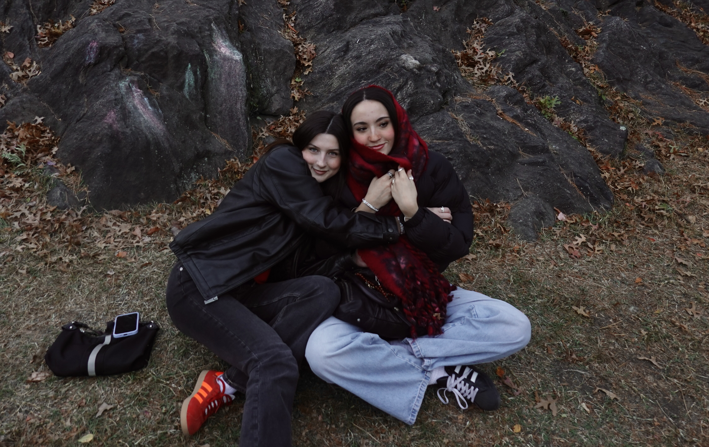
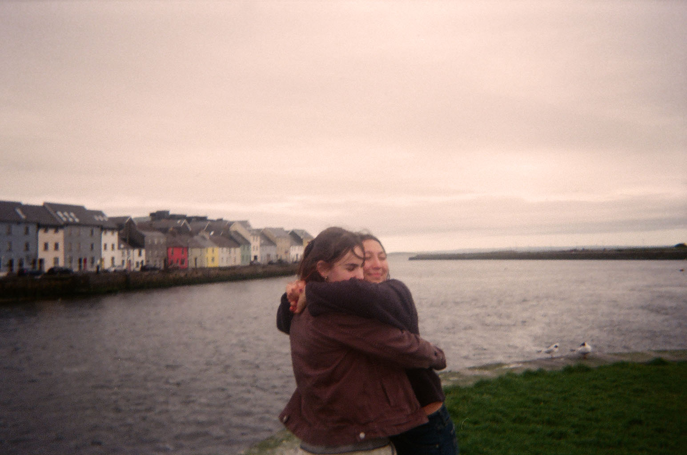
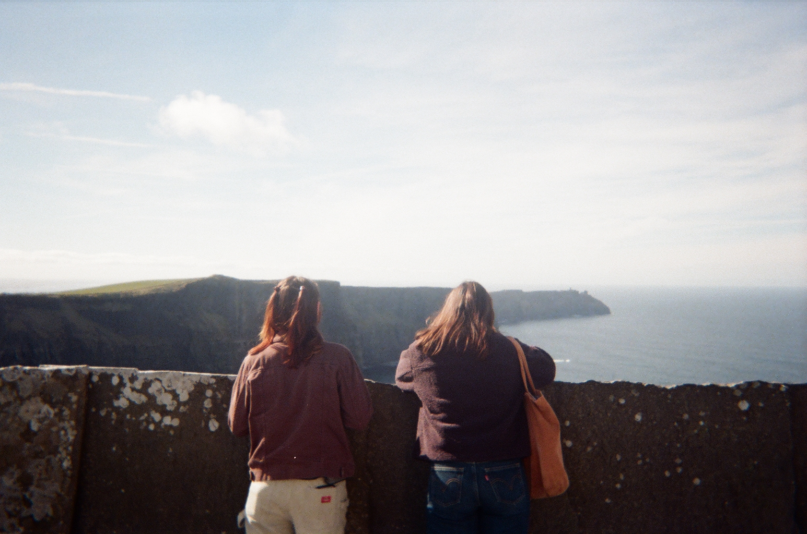
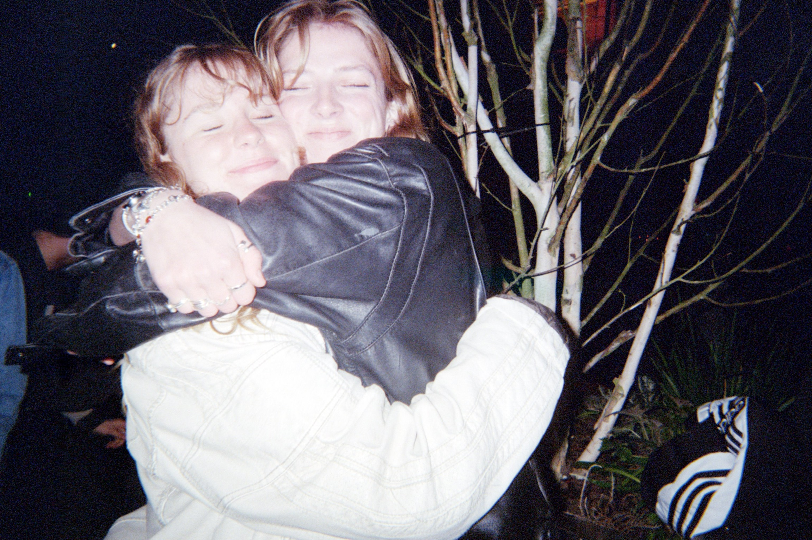
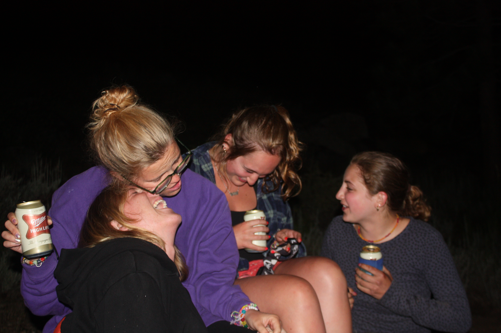

June 2025
I’ve been engaging and accepting
That every word I speak will be forgotten
And every word I write will be lost
Every thought I have is not new
And every emotion is simply a moment
I’ve been walking in the cold
Trying to remember what it was like
When I carried a piece of you with me
In the notes that I kept
Or the cadence of my voice
The way you take your time
Your thought and your grace
I’m remembering a time when I would think for a moment
Before replying
I’m trying to forgive myself for forgetting every word I have spoken
Every word I have written
Accepting that distance means forgetting details
It means saying things I don’t really mean
Because I didn’t give myself time to think
But it also means tapping my feet when I laugh
Skipping the third step
And holding onto movie tickets.
The people I meet seem to change me
Like they’re pressing they’re fingers into clay


Some people press so deep they’ve created chasms in my body
And some only leave a finger print
And by now I’m covered in craters
Layer after layer,
Some morph into others
Some get wiped away
And some remain untouched
I’ve been thinking about old friends
And the impressions that they left behind
The reason that I love going to the movies
Drinking iced matcha
Having trader Joe’s for dinner
Listening to cat Stevens
And hugging the wind
I forget all the words I speak
And all the words I write
I forget why I skip the 3rd step
But I still do
And I still think of you
When I need to take my time
When I want my words to matter
When I need to remember:
“all life deserves love, and kindness, and forgiveness”
I still remember those words
I wonder when I will forget
Or what I have already forgotten
But don’t realize is missing


